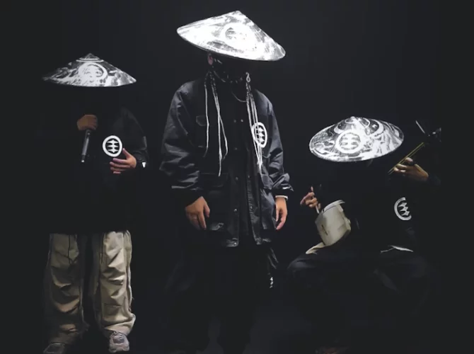

Using festival bio due to a lack of publicly available data
From the land of the rising sun comes SOMELINEZ. Three men dressed in black, masked, and wearing samurai hats, each with a unique role: a beatboxer, a dancer, and a player of the shamisen, an ancient Japanese string instrument. Together, they take you on a trance-inducing journey filled with meditative melodies, uptempo breaks, and bass-heavy grooves. A place where world music and hip-hop intersect, so to speak, though not a single word is rapped. It's not a mix the average Rabbit will be very familiar with, but all the more intriguing.
Sunday, July 05
15:30 - 16:15
Bossa Nova
3